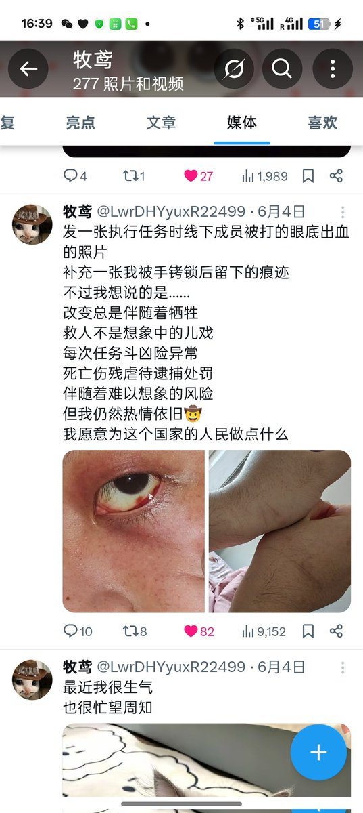

牧鸢
@LwrDHYyuxR22499
很高兴我的生命能拖着把这些事做完
但很可惜直到如今似乎大家也没太学会怎么快速救人……😪😪
感觉要是死了就有点死不瞑目了

牧鸢
@LwrDHYyuxR22499
😪令人感叹…
一年半以来不仅要负责文职工作拍摄从来就没有一刻停下来休息过
在前线也从来没停下过被打的眼底冒血视力下降按在地上拖行锁喉
留下案底
还要在自己仅有的钱里挤出来用来资助行动
回来又要整夜的思考下一个人该怎么救的对策熬着熬着夜就开始流鼻血然后开始吐血…
现在结束了反而有点迷茫 https://t.co/HaTHwmGwdG https://t.co/jX76sXrqBv